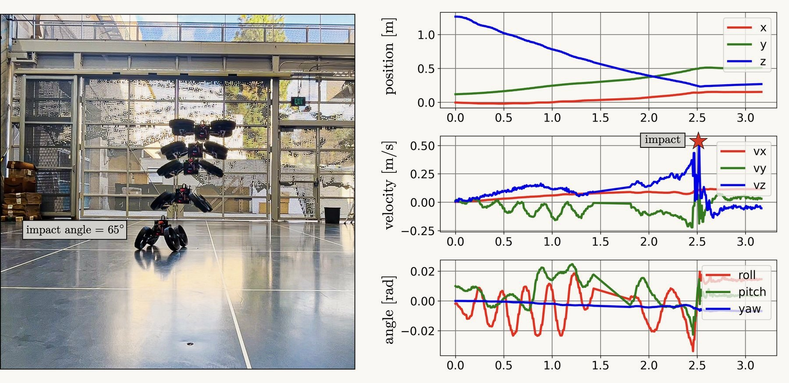

Research / Featured research
Learning-Based Control
We combine machine learning with physics-based control so robots can move with agility and adapt to new conditions, while their behaviour stays interpretable.
In the media: Caltech News
Quadrotor morpho-transition: learning vs model-based control strategies
Landing by transformation drives a quadrotor to the edge of actuator saturation. On hardware, an end-to-end reinforcement learning policy lands with more agility, but only once motor dynamics and sensing delays are part of its training world. Model-predictive control transfers out of the box, yet recovers less gracefully when actuators fail unexpectedly.


More research Ground-Aerial Morphing Robotics · Fluid-Body Interaction and Flow Control · Vision-Based Navigation and Manipulation